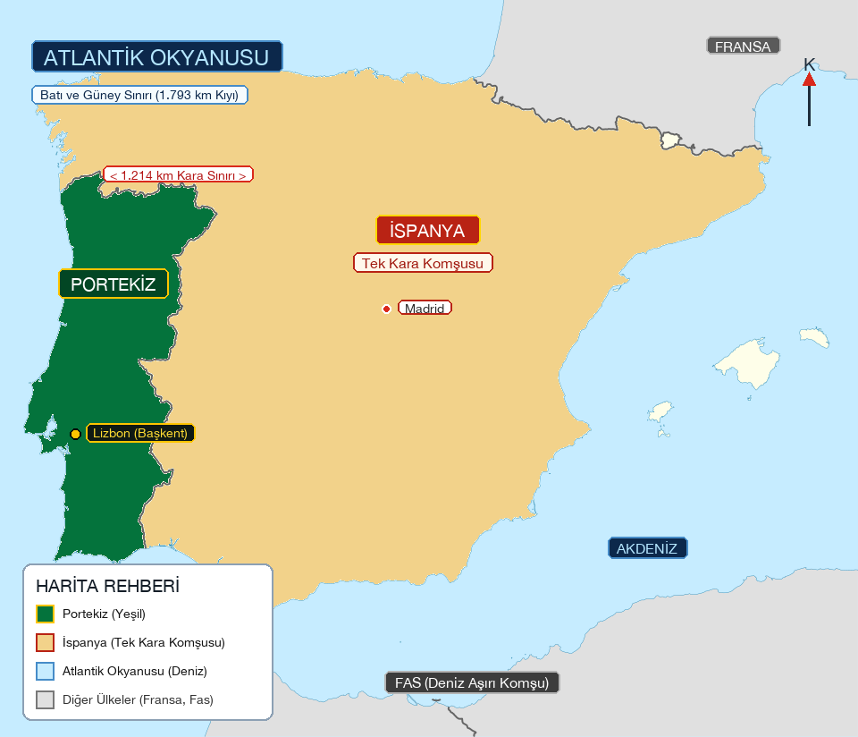
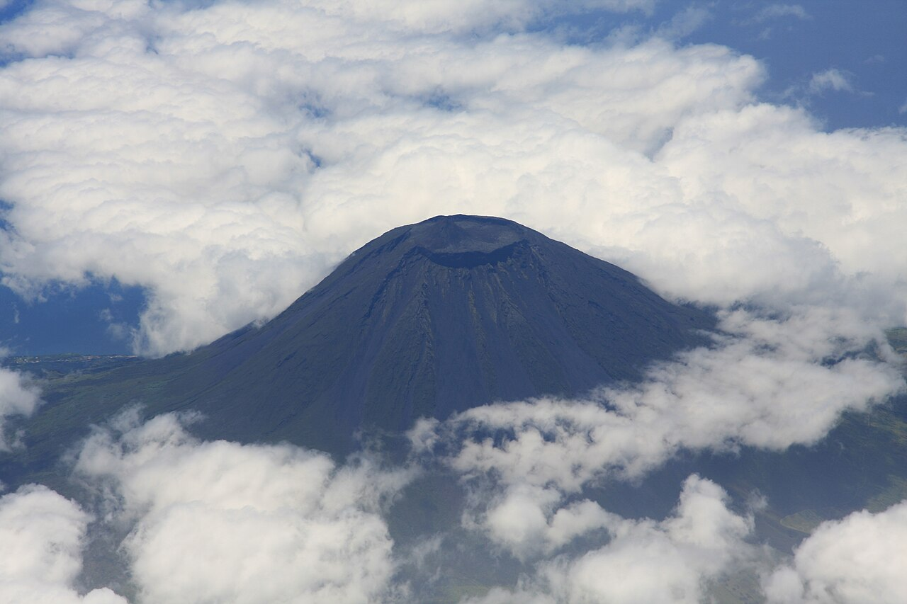
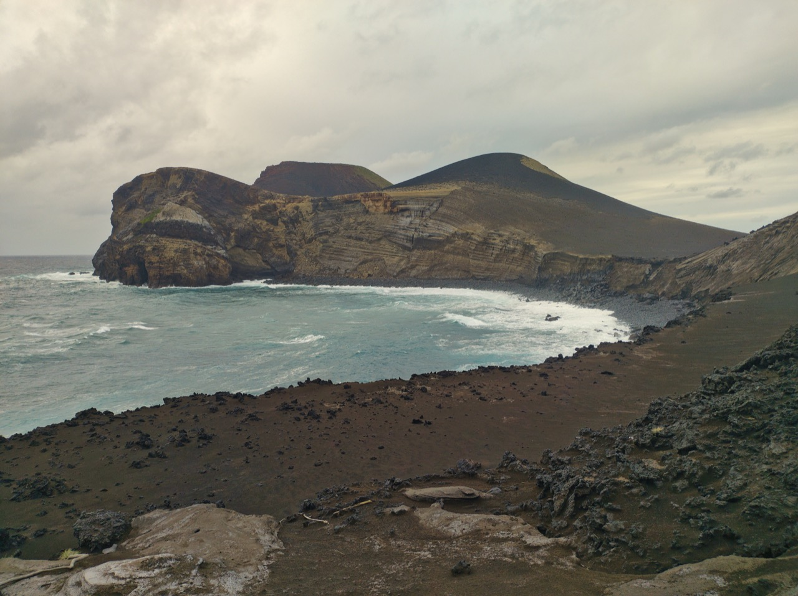
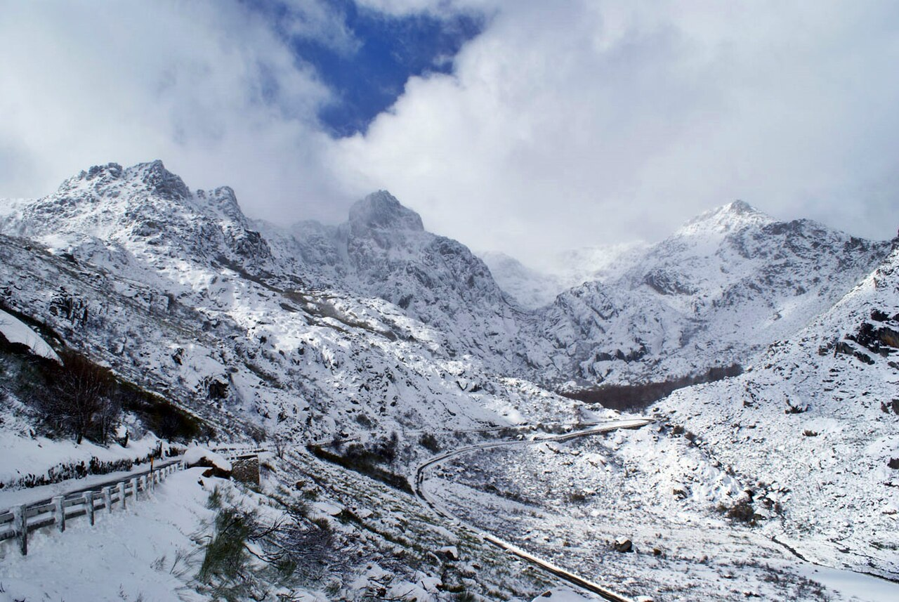
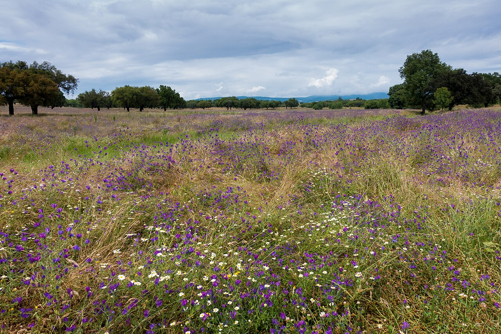
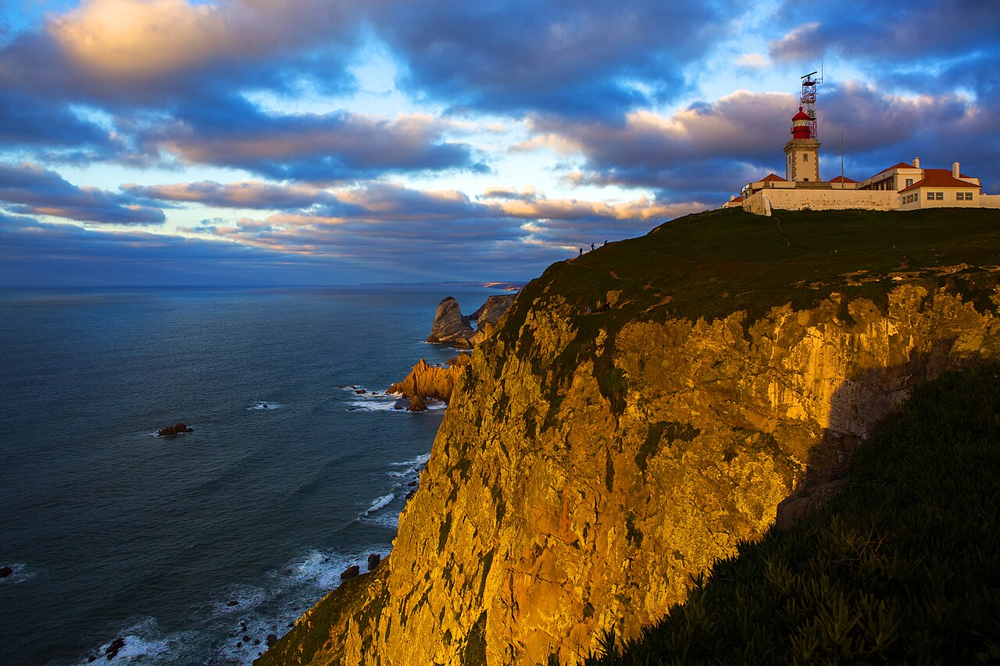

Portekiz'in Büyüleyici Coğrafyası
Kuzeyin sarp granit zirvelerinden güneyin altın renkli uçsuz bucaksız ovalarına, okyanus ortasındaki aktif volkanik adalardan kıta Avrupası'nın en batı ucuna kadar Portekiz'in eşsiz coğrafi rehberi.
Genel Coğrafi Yapı & Konum
Portekiz, İber Yarımadası'nın batısında yer alan anakara toprakları ile Atlantik Okyanusu'ndaki iki özerk takımadadan (Azorlar ve Madeira) oluşur.
Portekiz Haritası & Komşuları
İber Yarımadası'nın batı yakasında yer alan Portekiz'in harita üzerindeki konumu, tek kara komşusu ve deniz sınırları.

Portekiz'in Komşuları Kimlerdir?
⛰️ Ülkenin En Yüksek ve En Alçak Noktaları
Portekiz'in İklimi
Yılda 300'e yakın güneşli gün sayısıyla Avrupa'nın en aydınlık ve ılıman iklimine sahip ülkesi.
Ilıman Akdeniz ve Okyanusal İklim
Portekiz genelinde kışlar son derece ılıman, yazlar ise sıcak ve kurak geçer. Okyanusun yumuşatıcı etkisi sayesinde aşırı dondurucu soğuklar nadirdir. Ülkenin farklı coğrafi bölgelerinde 3 belirgin iklim karakteri görülür:
Atlantik rüzgarlarına açık olan kuzey ve kuzeybatı (Minho ve Douro) bol yağış alır. Serin ve yemyeşil yaylalar, gür ormanlar ve bereketli üzüm bağları bu nemli iklimle şekillenir.
Alentejo ovaları ve Algarve sahilleri tipik sıcak Akdeniz iklimine sahiptir. Yaz ayları oldukça sıcak ve kuraktır; yılda 3.000 saatten fazla güneşlenme süresiyle Avrupa'nın en güneşli tatil cennetidir.
Madeira ve Azorlar'da Gulf Stream akıntısı sayesinde yıl boyunca 16°C – 25°C arasında değişen "Ebedi Bahar" iklimi hüküm sürer. Bol nem ve ılıman hava tropikal çiçekleri besler.
Portekiz'in Yanardağları (Volkanik Miras)
Portekiz anakarasında aktif bir yanardağ bulunmazken; Atlantik'teki Azor Takımadaları (Açores) tamamen volkanik kökenlidir ve dünyanın en büyüleyici kraterlerine ev sahipliği yapar.
Montanha do Pico (Pico Stratovolkanı)
Pico Adası'nda yükselen Montanha do Pico, deniz seviyesinden 2.351 metre yüksekliğiyle hem Portekiz Cumhuriyeti'nin en yüksek dağı hem de Atlantik'in en görkemli stratovolkanıdır.
Zirvesindeki kaldera (Piquinho konisi) bulutların üzerinde parlar. Tarihsel süreçte en son 1718 ve 1720 yıllarında büyük lav akıntıları püskürtmüştür. Günümüzde zirvede sıcak kükürt buharları çıkaran fumeroller aktif durumdadır.

Capelinhos Yanardağı & Furnas Kalderası
Capelinhos Yanardağı (Faial Adası): 1957 – 1958 yıllarında denizin altından patlayarak lav ve kül püskürtmüş, okyanusta 2.4 km²'lik yepyeni bir kara parçası meydana getirmiştir. 20. yüzyılın en önemli volkanik olaylarından biridir.
Furnas Vadisi (São Miguel): Aktif hidrotermal havzadır. Yeraltından kaynayan çamurlar, kükürtlü sıcak su gayzerleri (caldeiras) ile ünlüdür. Portekizliler meşhur güveçleri "Cozido das Furnas"ı toprağın doğal volkanik ısısıyla pişirirler.

Portekiz'in En Ünlü Dağları
Kuzey ve İç Portekiz'in granit kütleleri, buzul vadileri ve bembeyaz karlı zirveleri.
Serra da Estrela (Yıldız Dağları)
Kıta Portekizi'nin en yüksek sıradağıdır. En tepe noktası olan Torre Zirvesi 1.993 metreye ulaşır (tepesine yapılan 7 metrelik anıt kuleyle tam 2.000 metreye tamamlanmıştır).
Portekiz'in tek kış sporları ve kayak merkezi bu dağdadır. Buzul Çağı'ndan kalan U biçimli meşhur Zêzere Buzul Vadisi, granit kayalıklar ve meşhur leziz koyun peyniri "Queijo Serra da Estrela" ile tanınır.

Serra de Sintra (Sintra Dağı)
Lizbon'un hemen batısında Atlantik rüzgarlarını karşılayan granit tepeler silsilesi. Mikro-kliması sayesinde yoğun sisler, yemyeşil subtropikal eğrelti otları ve tepesindeki renkli Pena Sarayı ile büyülü bir atmosfer sunar.
Serra do Gerês (Peneda-Gerês)
Portekiz'in tek Milli Parkı olan Peneda-Gerês bölgesinde yer alır. İber kurdu, vahşi Garrano atları ve kristal berraklığındaki dağ şelaleleriyle granit bir kanyon labirentidir.
Serra do Marão
Porto ile Douro şarap vadisi arasında devasa bir doğal bariyer oluşturan dağdır. Okyanusun nemli havasını keserek Douro Vadisi'nde sıcak ve güneşli bir mikro-iklim oluşmasını sağlar.
Uçsuz Bucaksız Ovalar ve Nehir Vadileri
Güneye indikçe dağlar yerini altın sarısı buğday başaklarına, mantar meşelerine ve bereketli nehir taşkın ovalarına bırakır.
Alentejo Ovaları (Planícies do Alentejo)
Tejo Nehri'nin güneyinden Algarve dağlarına kadar uzanan Alentejo, Portekiz yüzölçümünün üçte birini kaplayan devasa bir düzlük coğrafyasıdır ("Além do Tejo" = Tejo'nun Ötesi anlamına gelir).
Göz alabildiğine uzanan altın sarısı dalgalı ovalar, asırlık mantar meşesi (Montado) korulukları ve zeytinliklerle kaplıdır. Portekiz, dünya doğal mantar üretiminin %50'sinden fazlasını tek başına bu ovalarda karşılar.

Ribatejo Ovası (Lezíria do Tejo)
Tejo Nehri'nin her kış taşkınlarla getirdiği zengin alüvyonlarla beslenen son derece verimli tarım ovasıdır. Tahıl, sebze, pirinç tarlaları ve Portekiz atlarının (Lusitano) yetiştirildiği geniş çayırlardır.
Douro Nehri Vadisi
Yüzyıllar boyunca insan eliyle şekillendirilmiş şist teraslar. Dünyanın en eski sınırlandırılmış şarap bölgesidir. Sarp vadi yamaçları boyunca kıvrılan Douro Nehri eşsiz bir kanyon coğrafyası çizer.
Ria de Aveiro Ovası
Vouga Nehri'nin okyanusla birleştiği deltada oluşan sığ lagün ovası. Tuz tavaları, kanallar ve sucul çayırlarla "Portekiz'in Venedik'i" olarak anılan kıyı düzlüğüdür.
Portekiz'in En Ünlü Coğrafi Noktaları
Doğanın binlerce yılda şekillendirdiği, dünyanın dört bir yanından gezginleri büyüleyen ikonik doğal anıtlar.
Cabo da Roca (Roca Burnu)
Atlantik Okyanusu üzerinde 140 metre yüksekliğe dik bir falezle yükselen Cabo da Roca, Kıta Avrupası'nın en batıdaki coğrafi noktasıdır (Koordinat: 38° 47′ K, 9° 30′ B).
Ünlü Portekizli şair Luís de Camões, "Os Lusíadas" destanında burayı şu tarihi mısrayla ölümsüzleştirmiştir: "Onde a terra acaba e o mar começa" (Karaların bittiği ve denizin başladığı yer).

Benagil Deniz Mağarası (Algarve)
Algarve bölgesinde, dalgaların milyonlarca yılda kireçtaşı kayalıklarını oymasıyla oluşan Algar de Benagil, tavanında doğal bir çatı penceresi (oculus) bulunan devasa bir deniz mağarası kubbesidir.
İçerisinde sadece denizden (tekne, kano veya yüzerek) ulaşılabilen gizli altın sarısı bir kumsal barındırır. Güneş ışınları tavandaki delikten mağara kumlarına dökülerek büyüleyici bir ışık oyunu yaratır.

Lagoa das Sete Cidades (İkiz Krater Gölleri)
São Miguel Adası'ndaki devasa volkanik kalderanın içinde yer alan ikiz göldür. İki göl dar bir boğazla birbirine bağlıdır ancak mineral ve ışık kırılmaları nedeniyle biri zümrüt yeşili (Lagoa Verde), diğeri gök mavisi (Lagoa Azul) görünür.
Yerel efsaneye göre, mavi gözlü bir prenses ile yeşil gözlü bir çobanın imkansız aşkı yüzünden döktükleri gözyaşlarından oluşmuştur. Azor Adaları'nın kartpostallık doğa harikasıdır.